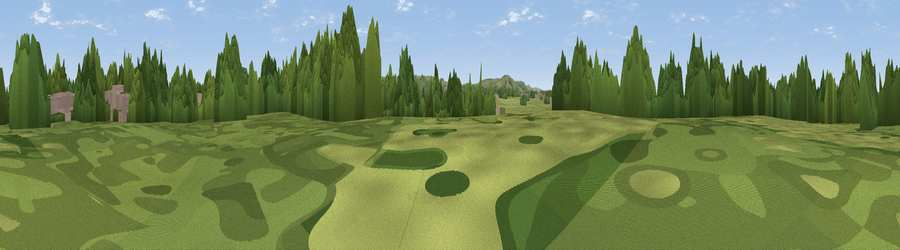

Downland Viewpoint, from the Lower Weald
#42852 in England · top 89% of its area beats it · near Burgess HillThe view, rendered

A 360° render of this exact spot computed from the terrain model, tree cover and land cover — summer colours, afternoon light, calibrated against photographs of famous viewpoints. Real trees, hedges and buildings will differ in detail.
The panorama
Grey silhouette: terrain skyline in each direction (720 bearings, Earth curvature and refraction included). Dashed green: skyline with trees (+15 m) and buildings (+8 m) as obstacles. Blue strip: how far the ground is visible on each bearing.
Where the view opens
Wedge length = distance to the farthest visible ground on that bearing (vegetation-aware). Rings at 10, 25 and 50 km.
What fills the view
40% woodland · 37% grassland · 21% built-up · 2% cropland
Angular shares of the visible panorama (visual magnitude), not map area. Landscape diversity 0.50 (0–1 Shannon).
Key numbers
More beautiful places nearby
The staircase of upgrades: each row has a higher view potential than everything closer. Driving times are estimates from straight-line distance, calibrated against real road routing — check an actual route before setting out.
| Place | Direction | Drive | Score |
|---|---|---|---|
| Viewpoint near Ditchling | SE · 3 km | ~8 min | 47.8 |
| Wolstonbury Hill | SSW · 4 km | ~10 min | 79.6 |
| Viewpoint near Westmeston | SSE · 5 km | ~12 min | 81.1 |
| Ditchling Beacon | SSE · 6 km | ~12 min | 81.8 |
| Fulking Hill | SW · 9 km | ~17 min | 82.2 |
| Viewpoint near Steyning | WSW · 16 km | ~29 min | 82.6 |
| Chanctonbury Ring | WSW · 17 km | ~30 min | 87.0 |
| Firle Beacon | SE · 22 km | ~37 min | 88.9 |
50.94683, -0.14889 · source: osm viewpoint · position refined by local search. Computed location — check access rights before visiting.